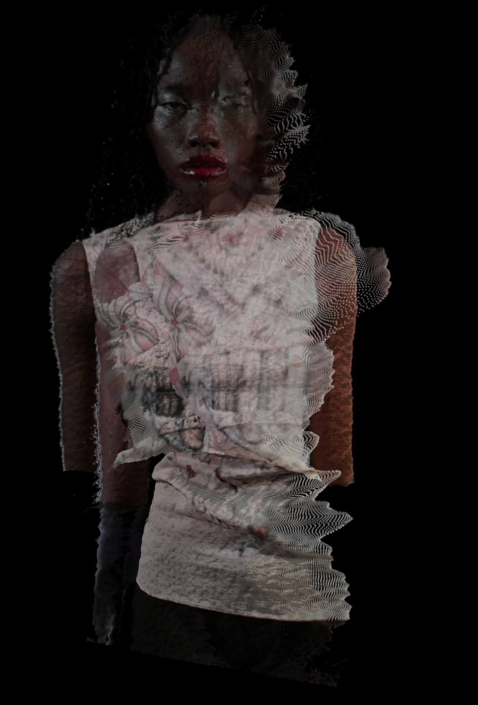
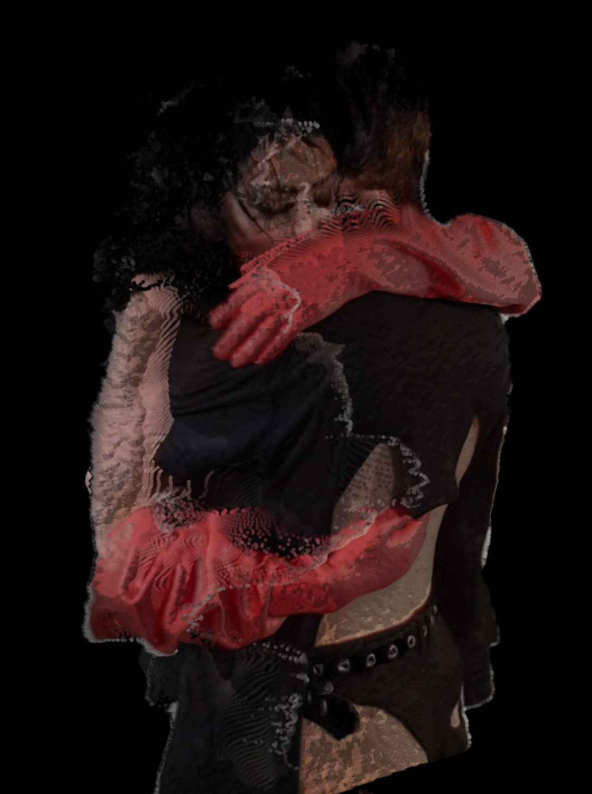
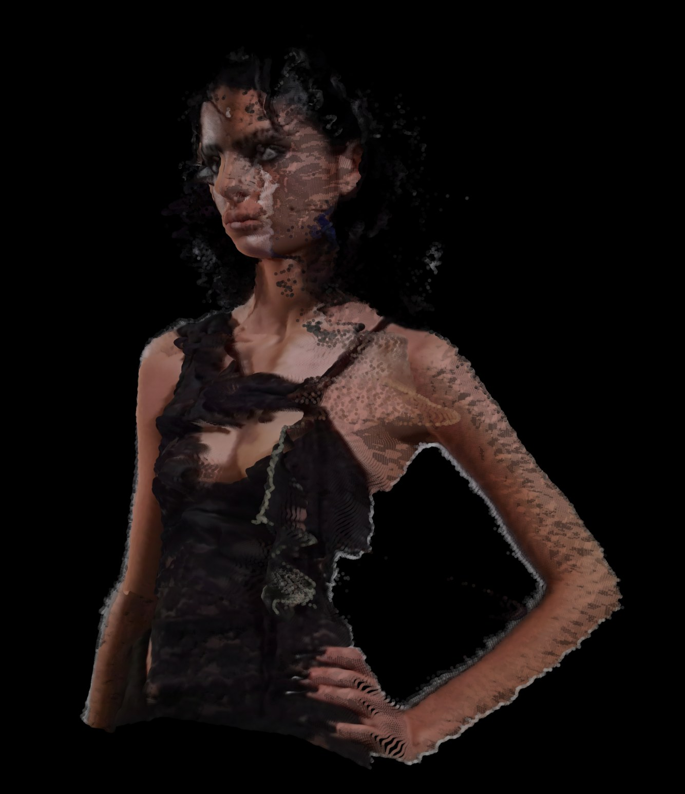
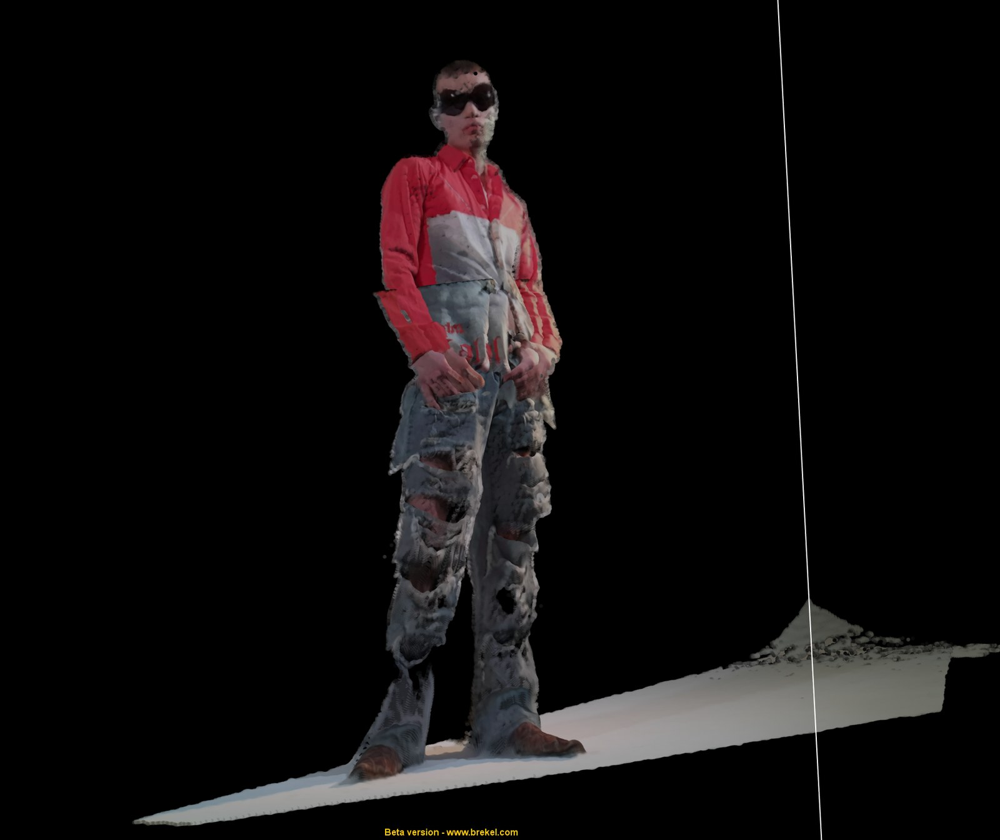
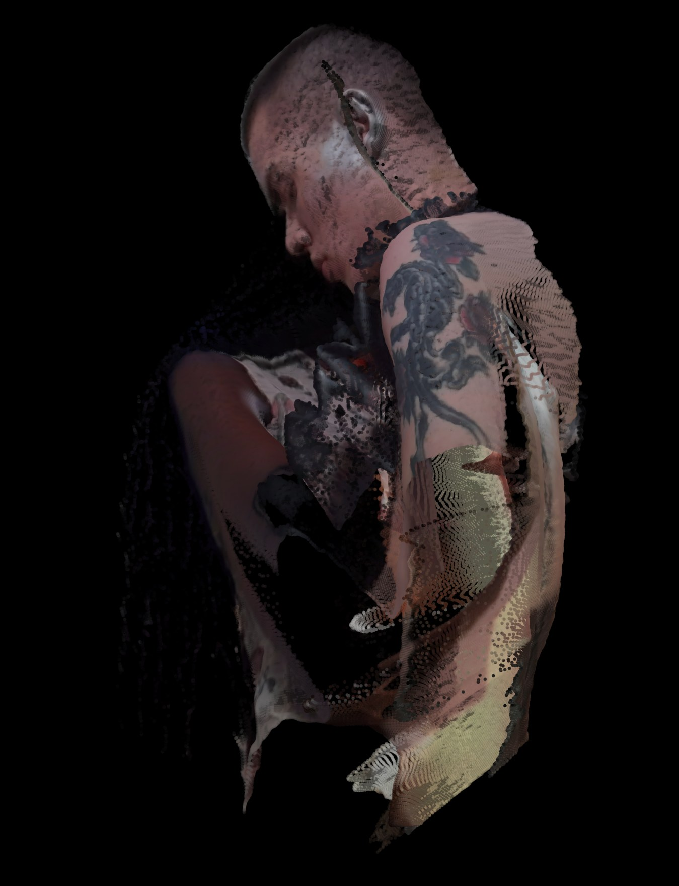
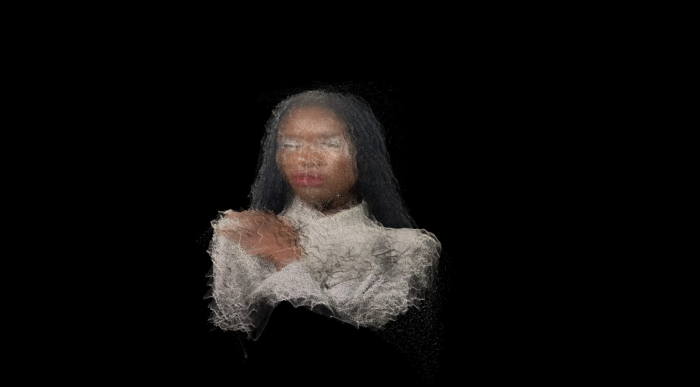
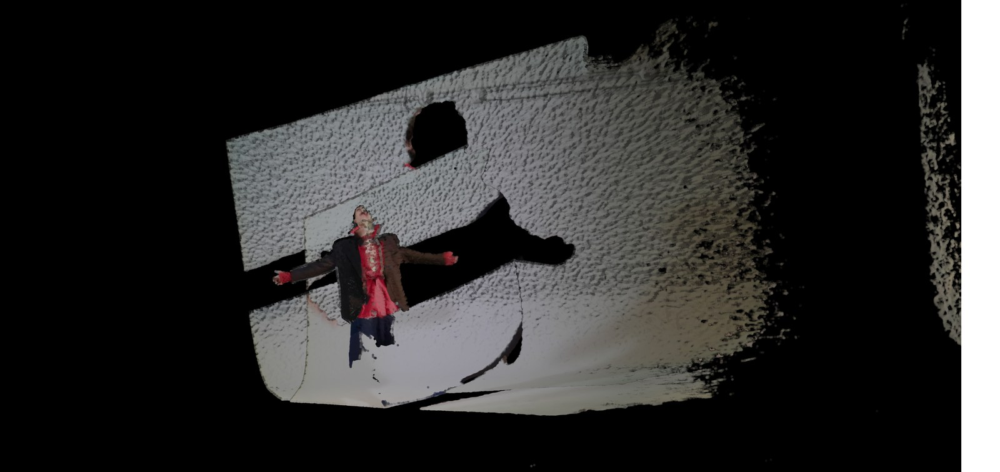

A fashion editorial merging 3D body scanning with high fashion, published in Lignes de Fuite Vol. 3.
3D Meta Love is a fashion editorial created in collaboration with Nima Mardaneh and Milan Tanedjikov for the third volume of Lignes de Fuite magazine. The project used photogrammetry and 3D reconstruction to capture models in designer clothing, producing ghostly, distorted figures that collapse the boundary between physical body and digital artifact.
Models were scanned in motion, their bodies fragmenting and multiplying through the reconstruction process. The resulting images treat fashion not as surface but as spatial data: garments by Fecal Matter, Alexander McQueen, Jean Paul Gaultier, Rick Owens, and Comme des Garçons become entangled with the digital noise of the scanning process itself.




Samuel served as co-creative director, photographer, and video artist on the project. The shoot took place at WIP in Montreal, with styling by Nima Mardaneh and a cast of six models. The editorial was accompanied by a video piece with sound by DEBBIE DOE.

